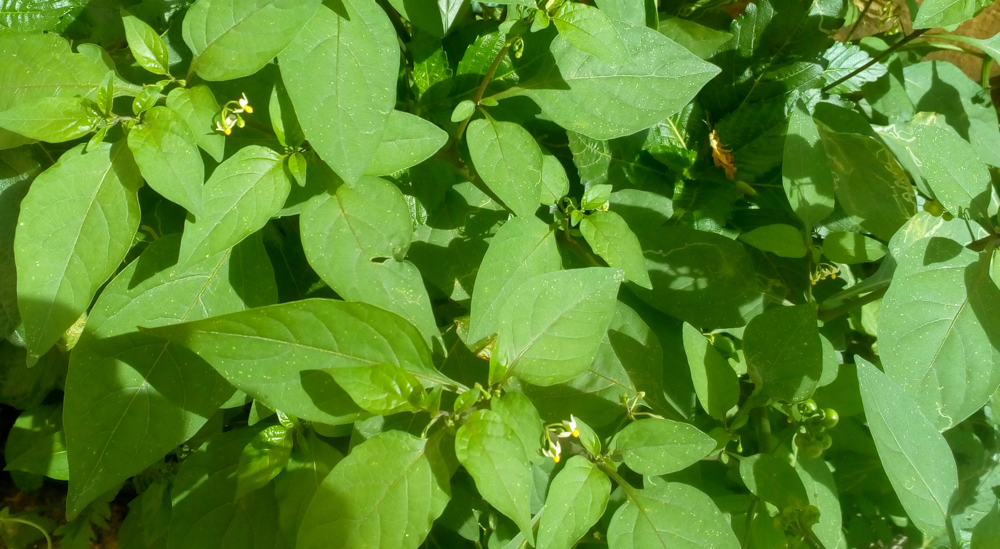

பித்தம் தொடர்பான பிணிகளை முருங்கைக் கீரை மிகச்சிறந்த முறையில் குணப்படுத்தும். தொண்டை தொடர்பான நொய்களை நீக்குவதில் முருங்கைக் கீரை தக்க முறையில் சிறப்பாகப் பணியாற்றுகிறது.
தாது புஷ்டி உண்டாகும். கண் தொடர்பான நோய்கள் நீங்கும். உடலுக்கழகும், வாலிப்பும், மதர்ப்பும் கொடுக்கும்.
குழந்தைக்கு பால் கொடுக்கும் தாய் மார்கள் முருங்கைக் கீரையை உணவுடன் சேர்த்து வந்தால் பால் நங்குச் சுரக்கும். முருங்கைக் கீரையின் சாற்றைக் கண்களில் விட கண் நோய் நீங்கும். தேனுடன் கலந்து கண்களின் மேல் தீட்டலாம். இவ்வாறு தீட்டுவதினால் கண் நோய்கள் குணமாகும்.
மேலும் தகவல்களுக்கு...
விந்தணுக்கள் கூட வேண்டுமா? மணத்தக்காளிக் கீரையை அடிக்கடி சாப்பிட வேண்டும். 
இக்கீரைச் சாறு சிறுநீர் கோளாறை நீக்கும் சிறுநீர் பிரிய வழி செய்யும். மலச்சிக்கலை குணப்படுத்தும். தினமும் மூன்று வேளை 25 முதல் 30 மில்லி அளவு குடித்து வந்தால் கல்லீரலில் உண்டாகும் வீக்கத்தைக் குறைக்கும்.
இக்கீரை குடல் புண்ணிற்கு மிகச்சிறந்த மருந்து. மேலும் வாய்புண்ணிற்க்கும் சிறந்த மருந்து. மதுபானத்தால் ஏற்படும் போதையை நீக்குவதற்க்கு இந்த சாற்றை அருந்தலாம்.
எனவே இக்கீரையை மூல வியாதி, குடல் புண் வாய்ப்புண், முதலியவற்றை குணப்படுத்தும் மருந்தாகும். குடலில் புண் ஏற்பட்டுள்ளதற்கு அறிகுறி தான் வாய்ப் புண், நாக்கில் புண் ஏற்படும். வயிற்றுப் புண்னை உடனுக்குடன் ஆற்றாவிட்டால் அறுவை சிகிச்சைக்கு வழி ஏற்பட்டுவிடும். ஆதலால் அதனை உடனுக்குடன் கவனிக்க வேண்டும். குடல் புண்ணிற்கு கடுமையான சிகிச்சை முறை தேவையில்லை. மணத்தக்காளிக் கீரையே சிறந்த மருந்தாகும்.
மேலும் தகவல்களுக்கு...
ஞாபக சக்திக்கு இதை விட்டால் வேறு மூலிகையே இல்லை என்று மருத்துவ நூல்கள் கூறுகின்றன.
மூளையின் திறமையான இயக்கத்திற்க்கு இந்தக் கீரைதான். இந்தக் காரணத்தால் மூளை சம்பந்தப்பட்ட நோய்களுக்கும், மன நோயாளிகளுக்கும் இந்தக் கீரை மருந்தாகப் பயன்படுத்தப்படுகிறது. மனவளர்ச்சி குன்றியிள்ள நோயாளிகள் இந்தக் கீரையை உண்பதனால் மன வளர்ச்சி பெருகி, சிறப்பான குணத்தை அடைவார்கள்.

இந்தக் கீரையை வாரம் ஓரிரு முறை உணவில் சேர்த்து உண்பது நல்ல வழக்கமாகும். ஆனால் அளவுக்கு மிஞ்சியோ அடிக்கடி சேர்த்துக் கொள்வதோ அவ்வளவு நல்லதல்ல.
இவ்வாறு அடிக்கடி உண்பதனால் உடம்பில் அடித்துப் போட்டதைப் போன்ற ஒருவித வலியை உண்டாக்கும். அன்றியும் தலைச் சுற்றலும் மயக்கமும் உண்டாக்கும்.